The Game
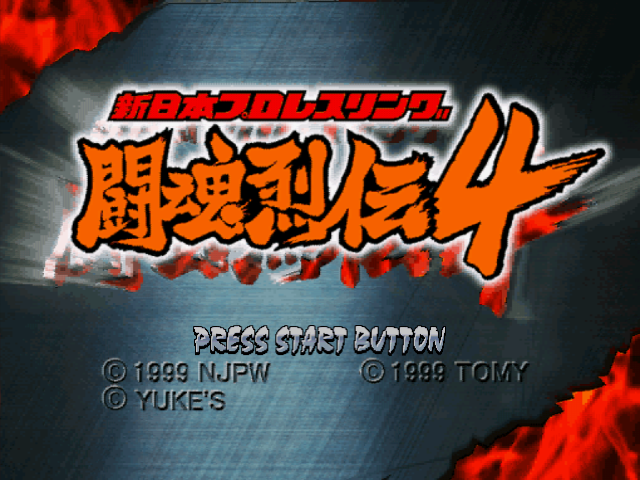
Shin Nihon Pro Wrestling: Toukon Retsuden 4 (新日本プロレスリング 闘魂烈伝4, "New Japan Pro-Wrestling: Fighting Spirit Legend 4") is a 3D wrestling game developed by Yuke's and published by Tomy for the Sega Dreamcast. It came out in Japan on September 2, 1999 (product code T-28202M) and was never released anywhere else.
It is the fourth main game of the Toukon Retsuden series, which made Yuke's name as a wrestling developer: three PlayStation games (1995, 1996, 1998) and a 2D WonderSwan game came before it, and a 2D Game Boy Advance game, Toukon Retsuden Advance (2002), after it. It is the only one on the Dreamcast. The same year it also became a NAOMI arcade game, Toukon Retsuden 4 Arcade Edition, which reads edit wrestlers from the Dreamcast version.
The roster is New Japan Pro-Wrestling (NJPW) in 1999, the year Keiji Muto held the IWGP Heavyweight title: the main roster, the nWo Japan faction (Masahiro Chono, Muto and his alter ego The Great Muta, Hiroyoshi Tenzan, Satoshi Kojima and others), the freelancers Genichiro Tenryu, Don Frye and Atsushi Onita, the UFO pair Naoya Ogawa and Antonio Inoki, and ten junior heavyweights led by Jushin T. Liger. Seven of the 42 are hidden at first (Secrets).
What sets it apart:
- Hidden meters. The TV screen shows no health bar at all. Each wrestler has stamina and four body parts, and the only place to see them is the VMU in the controller (Stamina and Body Parts).
- Strike, throw, hold. A strike beats a throw, a throw beats a hold and a hold beats a strike, with no luck involved (Standing).
- Groggy levels. A hurt opponent staggers at three levels, and every level opens a different move on every button: each wrestler has 24 moves standing face to face alone (Groggy).
- Critical combos and the Toukon Rush. Land a wrestler's own setup and finish within 12 seconds for extra damage; take a beating while behind and the crowd carries you into a rush (Toukon Rush).
- The real calendar. The G1 Climax, Best of the Super Juniors, the SG Tag League and both IWGP titles, with their real lists of past champions (Modes).
- Edit Wrestler. Eight wrestlers of your own, down to their thinking patterns (Edit Wrestler).
The English translation covers every menu, the move names, the Wrestler Directory and the menu art. The movies and the staff credits stay in Japanese.
Your First Match
A singles match against the computer, from power-on to the result. Menus take A to confirm and B to go back; Start does nothing on a menu.
- Power on with a memory card (VMU) in the first slot of controller A. A caution screen comes up; press Start. The company logos and the intro movie follow (Start skips the movie).
- Title screen: press Start.
- Main Menu: the cursor is on Exhibition Match. Press A, then A again on Singles Match.
- Player Setup: you (MAN, 1P) in the red corner against the computer (COM) in the blue. Up switches a slot between MAN and COM; leave it and press A.
- Character Select, your side: first pick a group with Left/Right (NJPW, nWo Japan, Freelance, UFO, Junior Wrestlers, Edit) and press A. Then Left/Right picks the wrestler and Up/Down switches between the 1P and 2P costume. A confirms. Shinya Hashimoto, the first wrestler, is a good start: strong strikes and simple big moves.
- Character Select, the computer's side: you pick its wrestler too, the same way.
- Select Venue: the arena, then the ring mat. A on each.
- Rule Settings: the cursor sits on OK. Press A to start with the standard rules: 30 minutes, one fall, pinfall, submission or count-out (Rule Settings).
- The bell: your name is at the top left, the computer's at the top right, the clock in the middle. Walk with the D-pad (not the analog stick). Trade strikes with A, grab with B (a throw) or Y (a hold), and watch the move names at the bottom of the screen.
- Wear him down. Early in a match a pin can't win: wait until he staggers easily and stays down longer. Then land your biggest move (a grab with a direction held while he is groggy) and at once hold X by his body to pin. If he grabs you, mash buttons and directions together to break free.
- The result: the way it ended, the winner (O), the loser (X), the time and the deciding move, with replays. Press Start. An Exhibition match ends at the title screen; Start there brings back the Main Menu.
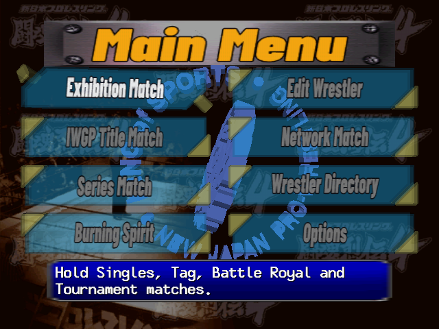
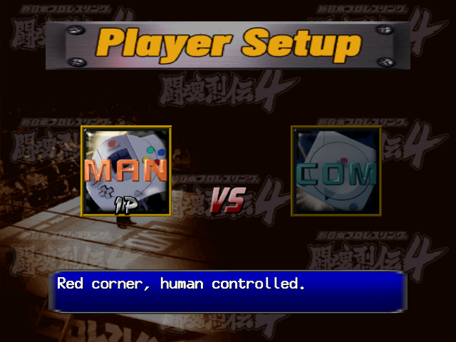
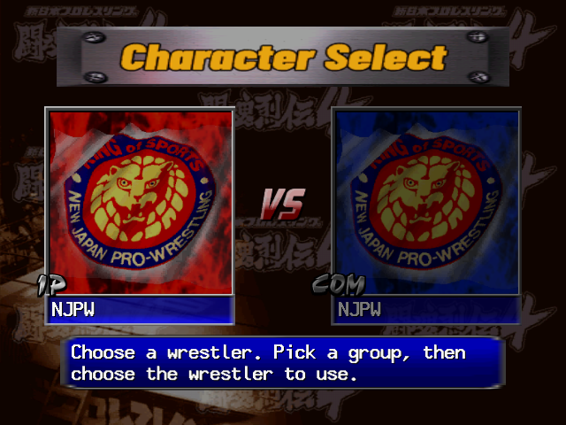
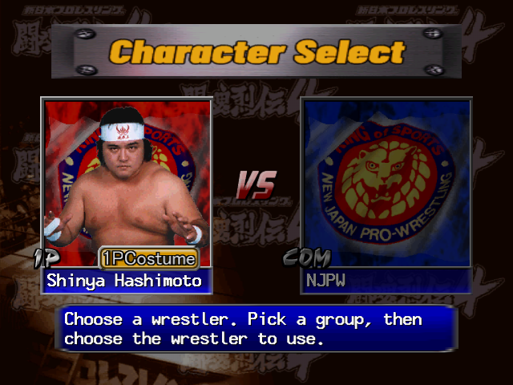
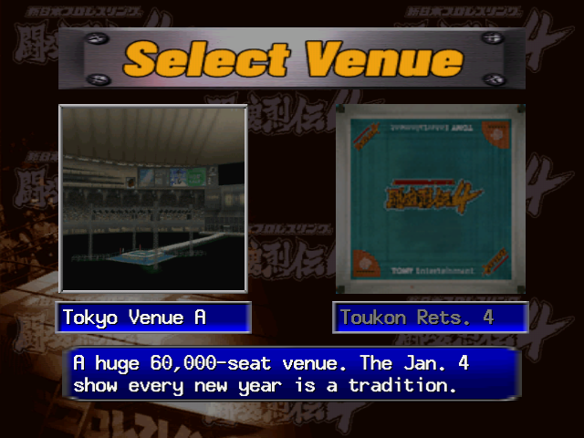
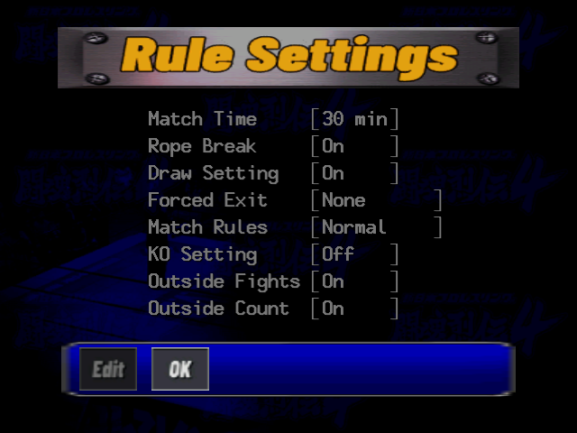
Controls
The Dreamcast controller, as the game uses it in a match. The menus are covered under Menus.
The Controller
| Button | In a match |
|---|---|
| A | Strike. Also climbs the turnbuckle (A + toward the corner) and dives from the top. |
| B | Throw (a grapple). On a downed opponent: a lift throw. |
| Y | Hold: submissions and technical holds. |
| X | Action: run, Irish whip, pick up, pin (hold it down), move between ring, apron and floor, take a weapon, tag. See The X Button. |
| L | Taunt. |
| R | Taunt in a singles match (the same as L); with three or four wrestlers it switches your target. |
| D-pad | Walk. Held while you press a button, it gives the "+ D-Pad" move of that button. Any direction counts the same. |
| Analog stick | Only with three or four wrestlers: up, left or right picks an opponent. It doesn't walk. |
| Start | Pause. While paused, R skips the match. |
Press two attack buttons at once and the game takes the throw first, then the strike, then the hold: A+B throws.
Menus
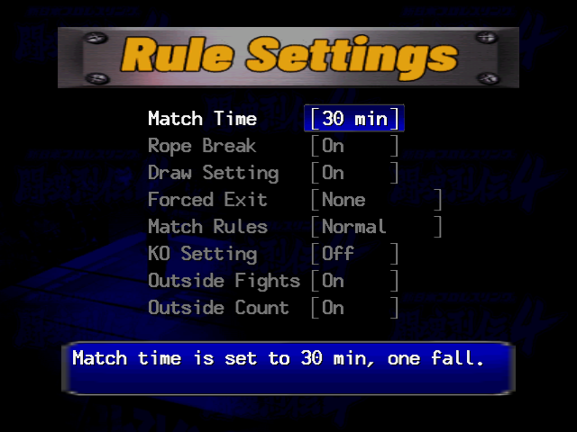
- A confirms, B goes back. Start works only on the title screen, the caution screen and the result screen. B on the Main Menu returns to the title screen.
- Options and Rule Settings open with the cursor on OK. Press Left to Edit and A, choose a row with Up/Down and press A, change it with Left/Right (the line at the bottom explains each value) and press A to set it. B returns to the button bar; OK carries on.
- Character Select: a group first, then a wrestler, with Up/Down for the costume. Player 1 picks the computer's wrestlers too. The same wrestler can face himself.
- Soft reset: hold A+B+X+Y and press Start to return to the title screen.
Standing: Strike, Throw, Hold
Every attack comes from a slot in the wrestler's move set, picked by the button, whether a direction is held, where you stand and how groggy the opponent is. Facing him (or at his side) each of A, B and Y has a move with and a move without a direction, for each of his four states: normal (N) and the three groggy levels S, M and L. That is 24 moves face to face and another 24 from behind him. The Move List shows them for every wrestler.
A starts at once. B and Y first lock up for about a quarter of a second, and the move only happens if he is still in reach and can be grabbed when the lock-up ends; otherwise you grab air.
This is exact, with no stat or chance in it:
| You press | He presses | What happens |
|---|---|---|
| A strike | B throw, at the same time or up to a quarter second before | His grab misses and your strike lands. |
| A strike | Y hold, just after your strike starts | He catches the strike in a hold at once. Late in your strike it's too late for him. |
| B throw | Y hold, in either order, up to a quarter second apart | The throw goes through. |
| The same button | The same button | The earlier press wins. |
A running opponent is met with the dash counter moves: A, B or Y as he arrives. Some wrestlers catch kicks and some reverse a grab from behind by themselves; these reversals aren't on a button.
The X Button
X does whatever fits where you are. The first line that applies wins.
| Situation | Press | What happens |
|---|---|---|
| Opponent far away | X | Run at him. X + a direction runs that way; X again stops. While running, A/B/Y give the dash attacks. |
| Opponent standing, close | X | Irish whip into the ropes; with your back near a corner, into the corner. Outside: into the barrier or the ring post. Meet him on the way back with the whip-counter or rebound moves. |
| Your back to the ropes, face to face | X | Throw him over the top rope to the floor. |
| Outside, at the ring, facing it | X | Roll him back into the ring. |
| Opponent groggy, close | X + direction | Turn him around. |
| Opponent down | X / XX | Pick him up / pick him up facing away. |
| Opponent down and hurt | hold X | Pin. Keep it held at least a third of a second; let go sooner and it's a pick-up. Each part of the body has its own pin. |
| Opponent down | X + direction | Step over him, drag him or roll him over, depending on where you stand. |
| In the ring, at the ropes | X + toward the ropes | Out to the apron; X again during the move carries on to the floor. |
| On the apron | X + toward / away from the ring | Into the ring / down to the floor. |
| On the floor | X + toward the ring | Up to the apron; X again straight away goes on into the ring. |
| On the floor, at the crowd barrier | X + toward the barrier | Take a chair. X + diagonally into a barrier corner takes a bat (Tatsutoshi Goto and Michiyoshi Ohara take a kendo stick). |
| Holding a weapon | X + away from / toward the ring | Drop it / roll into the ring with it. |
| On the turnbuckle | X | Climb back down. |
Opponent Down
Stand by his head, his upper body, his lower body or his legs: each spot has its own A attack (stomps, elbow drops) and Y hold, face up and face down. B by his upper or lower body lifts him straight into a throw. Hold X to pin, again by body part.
A downed opponent stays down while he is hurt from the last hits, then gets up (Pins and Kick-Outs). As he rises you can hit a get-up attack; so can he.
Corners, Ropes and Outside
- Corner: a groggy opponent in the corner takes the corner attacks (A, B, Y); run at a cornered opponent for the corner charge.
- Top rope: A + toward the corner climbs it. From the top, A dives at a standing, downed or outside opponent; at a standing one B and Y also work when he is M or L groggy.
- Opponent on the top rope: A or B knocks him off or follows him up; B on a groggy one is an avalanche (superplex-style) throw.
- Apron: from the ring at an opponent on the apron, on the apron facing him or facing away, from the apron into the ring, and from the apron down to the floor. Each has its own moves.
- Outside: A at the ropes toward an opponent on the floor, or with a run-up on the floor.
Defence: Escapes and Kick-Outs
To get up, kick out of a pin or escape a hold, mash: what counts is the number of buttons and directions newly pressed each moment. Up, Down, Left, Right, A, B, X and Y all count; L, R and Start don't, and holding a button down counts once. Tapping several together, over and over, is best. The lower your stamina, the less each press is worth. Some holds are a mashing contest between the two players.
Caught in a hold by the ropes? With Rope Break on, the referee counts while a hold is kept on a wrestler touching the ropes; keep it on through the count of 5 and the attacker loses by disqualification.
Tag, Battle Royal and Elimination
- Tagging: walk over to your partner on your corner's apron and press X (toward your corner). Without a partner there, the same press takes you out to the apron yourself.
- On the apron: X + toward the ring comes in, X alone reaches out for the tag, L/R taunt.
- Double-teaming: with both partners in the ring, the double-team moves depend on where you both stand (side by side, front and back, at the corner, flanking a downed opponent). Behind a groggy opponent, X holds him in a full nelson for your partner's attack. How long the extra man may stay is the Forced Exit rule (Rule Settings); stay past the count and your team is disqualified.
- Saves: run in and press A to break up a pin or a hold on your partner.
- Targets: with three or four wrestlers, the analog stick (up, left, right) or R picks which opponent you go after. The Tag Marker option shows arrows over the wrestlers.
Taunts, Pause and Reset
- Taunts: L (and R in singles), with or without a direction, give two taunts when the opponent is normal and two more when he is groggy or down: four per wrestler. Some taunts start a critical combo.
- Pause: Start shows "PAUSE" and "SKIP R BUTTON"; there is no pause menu. R while paused ends the match with a simulated result (the same as letting two computers finish it), not a forfeit.
- Soft reset: A+B+X+Y, then Start.
How a Match Works
Stamina and Body Parts
The TV screen shows only the names and the clock. Under them every wrestler has:
- Stamina, the main life meter. Low stamina makes him easier to pin, quicker to stagger and weaker at escaping.
- Four body parts: head, torso, arms and legs. Each move hurts stamina and the parts it targets: an Armbar the arms, a Low Kick the legs, a DDT the head. A part worn to nothing is what lets a submission or a KO end the match, and it weakens the wrestler's own moves that use it.
- Short-term hurt, a hidden pool filled by each hit and drained over time. It keeps a wrestler down, makes him stagger and decides whether he kicks out.
With Show Stamina on (the default), the VMU in your controller shows your wrestler's gauges during a match: H, A, B and L, for the head, arms, body and legs.
The sizes differ by wrestler (their profiles in Wrestlers show them). The heavyweights have 75,000-85,000 stamina, the juniors 60,000-70,000, and the announcer and the referee 45,000. An average move does about 1,600 damage and the biggest throws and dives 4,500-6,000, so a match takes a while.
Stamina comes back by itself, fastest while down and standing still, slowest while groggy. But a wrestler who has once dropped to 70 % never recovers above 80 % again, and one who has dropped to 30 % never above 40 %. Damage late in a match stays.
Damage
Each wrestler rates 1-5 in Attack and in Defense for 13 kinds of move (Head, Chop & Palm, Fist/Elbow, Arm Strength, Power, Quickness, Bridge, Kicks, Chokes, Joint Locks, Rough Play, Aerial Moves, Technique). Every move has one kind. The attacker's Attack for that kind against the victim's Defense changes the damage:
| Attack minus Defense | -4 | -3 | -2 | -1 | 0 | +1 | +2 | +3 | +4 |
|---|---|---|---|---|---|---|---|---|---|
| Damage | -50 % | -30 % | -15 % | -5 % | ±0 | +5 % | +15 % | +30 % | +50 % |
- Your own hurt parts: each move uses some of the attacker's body parts. A part under 70 % cuts what it contributes to 85 %, under 30 % to 70 %. Wrecked legs kick weaker.
- Toukon Rush: × 1.5 (below).
- Critical combo: the finishing hit does +25 %.
- Outside: an attacker on the floor does +12.5 %.
Groggy
When a hit leaves enough short-term hurt, the victim staggers: S groggy, then M, then L. Each level gives the attacker different moves (the best ones usually sit at M and L), and a strike on an M-groggy wrestler knocks him down. The more tired a wrestler is, the less it takes: at 70 % stamina the thresholds drop to four-fifths and at 30 % to half, so late in a match a single strike can leave him at M.
The stagger wears off a level at a time (L, M, S, normal) as the hurt drains. Without mashing a groggy wrestler recovers slowly, about eight to ten seconds, and he regains no stamina while groggy late in a match.
Pins and Kick-Outs
A pinned wrestler kicks out the moment his short-term hurt runs out. If the referee reaches 3 first, the pin wins. The hurt drains faster when he mashes, and much faster while he still has his stamina. Roughly, he must still be carrying this much at the count of 3:
| His stamina | Not mashing | Mashing hard |
|---|---|---|
| Over 70 % | 9,000 | 17,000 |
| 31-70 % | 5,000 | 9,000 |
| 30 % or less | 2,000 | 4,000 |
The same hit also fills the pool more as stamina falls: three times as much under 15 % as at full health. So early pins can't work, and late in a match one big move followed at once by a pin wins. Stomps, elbow drops and knee drops on a downed wrestler reduce his hurt, so he gets up and kicks out sooner: pin straight after the big move instead.
Submissions, Referee Stops and KOs
A hold can only end the match once the body part it works on is used up. From then on, every hold with a finishing chance rolls it (an Armbar 50 %, a Scorpion Deathlock every time): on a success the victim either gives up (Give Up) or the referee stops it (Referee Stop), half and half. Stamina doesn't matter for this. A computer match has ended by Referee Stop with the loser still at 44 % stamina, because his neck was gone. Work one part: kicks to the legs before a leg hold, arm attacks before an arm hold.
A KO only happens with KO Setting on: a big strike or impact move (heavy kicks, chops, DDTs) that empties a body part knocks the victim out. With KO Setting off the same blow is just a knockdown.
Toukon Rush
Take 8 hits in a row without answering while you have less stamina than your opponent, and the crowd gets behind you: a Toukon Rush of 30 seconds. During it you recover stamina, your moves do × 1.5 damage, your short-term hurt fills half as fast and drains twice as fast (you kick out almost every time), and some moves change to a rush version (a top-rope move on a face-up opponent has its own Toukon Rush slot). Any one move you land resets the opponent's count to 0. Nothing about the wrestler, his popularity included, affects the rush.
Critical Combos
Every wrestler has three critical combos: a start move and a finish move. Land the finish within 12 seconds of the start, with no other move landing in between, and "Critical Combo" appears and that hit does +25 % damage. A start can be a taunt. Each wrestler's three are in his profile (Wrestlers); for example Shinya Hashimoto's taunt Point to Sky, Spin Twice into the Vertical Drop DDT.
Match Rules and Endings
Rule Settings
Before most matches. The defaults depend on the mode (Exhibition: 30 minutes, Draw On; Burning Spirit: No Limit, Draw Off). IWGP title matches have fixed rules and skip this screen.
| Rule | Values (default first) | What it does |
|---|---|---|
| Match Time | 30 min, 45 min, 60 min, No Limit, 10 min, 15 min, 20 min | One fall, with this time limit. The clock counts up; with No Limit (shown as "No Lim") it shows ∞. |
| Rope Break | On / Off | On: a hold on a wrestler touching the ropes must be broken by the referee's count of 5. |
| Draw Setting | On / Off | On: time running out is a draw. Off: the officials decide a winner (Table Ruling). |
| Forced Exit | None / Count 1-4 / No Run-ins | Tag matches only. None: no forced exit; you lose at a 5-count foul. Count N: the extra man is sent out of the ring at count N. No Run-ins: a run-in goes straight back out. |
| Match Rules | Normal / MMA Rules | Normal: pinfall, submission or count-out. MMA Rules: only a KO, submission or referee stop decides the match. |
| KO Setting | Off / On | On: a big blow on a used-up body part can end the match by KO. |
| Outside Fights | On / Off | Whether fighting outside the ring is allowed. |
| Outside Count | On / Off | On: a wrestler outside at the referee's count of 20 loses by count-out. |
How a Match Ends
| Result | How |
|---|---|
| Pinfall | The referee counts 3 before the pinned wrestler kicks out. |
| Give Up | A hold on a used-up body part makes him submit. |
| Referee Stop | The same, but the referee stops it. |
| KO | With KO Setting on, a big blow on a used-up body part. |
| Count-Out / Double Count-Out | One or both wrestlers still outside at the count of 20 (Outside Count on). |
| Win by DQ | A hold kept on a wrestler at the ropes past the count of 5, or a tag partner who stays in past the count. |
| Time Limit Draw | Time runs out with Draw Setting on. |
| Table Ruling | Time runs out with Draw Setting off: the officials name a winner. |
The result screen shows the result, the winner (O) and loser (X), the time and the move that decided it, over replays of the winner. In a Battle Royal a wrestler is eliminated by pinfall or submission under the rules you chose, and the last one left wins.
Modes
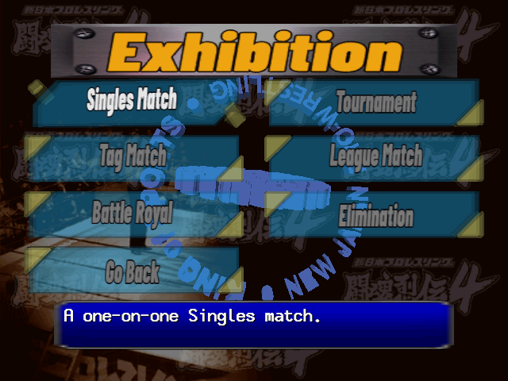
The Main Menu has eight items:
| Mode | What it is |
|---|---|
| Exhibition Match | Single matches, tags, battle royals, tournaments, leagues and elimination matches, set up as you like. |
| IWGP Title Match | Fight your way to an IWGP belt, then defend it. |
| Series Match | NJPW's yearly tournaments: G1 Climax, Best of the Super Juniors, SG Tag League, Super Jr. Tag League. |
| Burning Spirit | A run against a line of opponents with no continues. Clearing it unlocks the hidden wrestlers. |
| Edit Wrestler | Make up to eight wrestlers of your own. |
| Network Match | Online play over the Dreamcast modem. The servers closed long ago. |
| Wrestler Directory | A profile of every wrestler, with video messages. |
| Options | Difficulty, display, camera, sound. |
Exhibition Match
- Singles Match: one on one.
- Tag Match: two on two. Player Setup has four slots; a human can run both members of a team (whoever is in the ring) or a team can be led by a human or the computer.
- Battle Royal: four wrestlers, everyone for himself. Wrestlers go out by pinfall or submission; the last one left wins.
- Tournament: singles or tag, 4, 8 or 16 entrants, on a bracket (Pairings) you can fill by hand (Edit, Swap) or leave to "COM Random".
- League Match: singles or tag, round robin: one block of 4 to 8, or two blocks of 8, 10 or 12.
- Elimination: team against team. Survival Match: one to five a side, the winner stays on. Points Match: 5 on 5, 4 on 4 or 3 on 3, each bout scored.
Tournaments, leagues and elimination matches keep a save, so Continue picks them up later. After a single Exhibition match the game returns to the title screen.
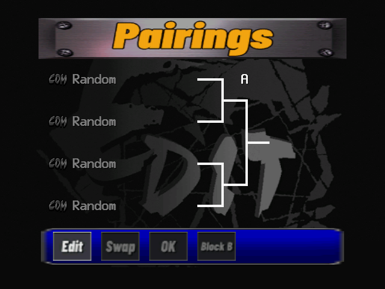
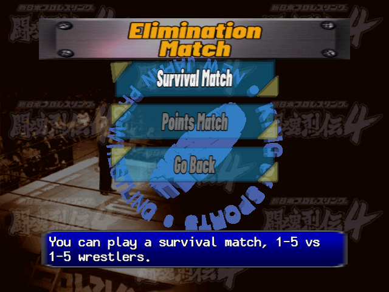
Venues and Rings
Select Venue comes before most matches: an arena, then a ring mat. The arena also sets the crowd and, with BGM on Venue Std, the music.
| Venue | Seats | The game's description |
|---|---|---|
| Tokyo Venue A | 60,000 | The Jan. 4 show every new year is a tradition. |
| Tokyo Venue B | 11,500 | Also famous as a G1 Climax venue. |
| Tokyo Venue C | 2,000 | The Mecca of combat sports, called a sacred ground. |
| Yokohama Venue | 14,000 | When you think of big Yokohama shows, it's this one. |
| Osaka Venue A | 50,000 | A big venue that has become a regular in recent years. |
| Osaka Venue B | 6,500 | A famous venue where many great matches took place. |
| Fukuoka Venue | 50,000 | Kyushu's big venue, a must for any tour. |
| Sapporo Venue | 5,000 | When you think of Sapporo, this is the venue. |
| Ring | What it is |
|---|---|
| Toukon Rets. 4 | The Toukon Retsuden 4 ring. |
| BVD Blue | The BVD Blue ring. |
| BVD Black | The BVD Black ring. |
| Lion 1 | The NJPW logo ring. |
| Lion 2 | The old NJPW logo ring. |
| Aristotristo | The Aristotristo ring. |
| Plain | The plain ring. |
| Random | Pick the ring at random. |
IWGP Title Match
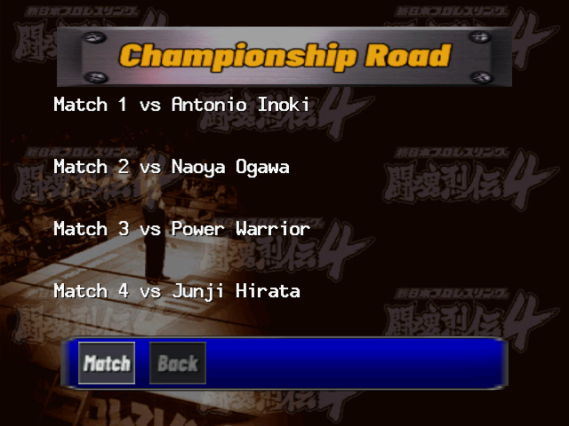
Heavyweight or Jr. Heavyweight, singles or tag. Start New makes you the challenger: pick your wrestler and venue, and the game lays out the Championship Road, a list of opponents to beat on the way to the belt, ending with the title match against the champion. Title matches have fixed rules, so no Rule Settings screen appears.
| Title | Matches | The champion | Opponents on the way |
|---|---|---|---|
| Heavyweight singles | 10 | Keiji Muto | Six heavyweights at random, then three from the top six: Shinya Hashimoto, Kensuke Sasaki, Shiro Koshinaka, Masahiro Chono, Keiji Muto, Genichiro Tenryu. |
| Heavyweight tag | 7 | Tatsutoshi Goto & Michiyoshi Ohara | Four random pairings, then two regular teams. |
| Jr. Heavyweight singles | 7 | Koji Kanemoto | Juniors at random. |
| Jr. Heavyweight tag | 7 | Shinjiro Otani & Ryuichi Takaiwa | Junior teams at random; the champions can turn up on the way too. |
The list shows four matches at a time and scrolls. Opponents are drawn fresh for each road, never you and never twice, and locked wrestlers are left out. Choosing the champion himself still ends the road against him, in a mirror match. Lose and the game keeps your place: Continue replays the match you lost.
Once you hold the belt, every new start is a single title match: you defend against a challenger you choose, not the whole road again. If you lose the belt, your next start is a one-match title shot. Past Champions lists the real champions of each title, with their number of defences (V9 = nine); A shows a champion's defence record.
Series Match
- G1 Climax: the heavyweight summer tournament, as a Tournament (4, 8 or 16) or a League Match (one or two blocks).
- Best of the Super Juniors: the junior league, two blocks of 8, 10 or 12.
- SG Tag League: the heavyweight tag league, 4 to 8 teams.
- Super Jr. Tag League: the junior tag league.
Each has Start New, Continue and its real list of Past Champions.
Burning Spirit
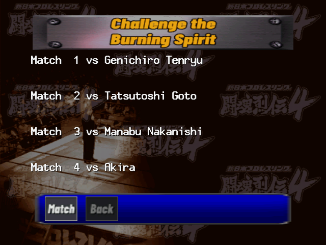
"Challenge the Burning Spirit": a run against a line of opponents, one after another. Singles against 10, 20 or All the wrestlers, or Tag against 5, 10 or 15 teams. You are the challenger: pick your wrestler, the venue and the rules (No Limit and Draw Off by default), and the line-up screen shows every match ahead, with each result filled in as you go.
Lose once and the run is over: the game returns to the title screen, with no continue. Win the last match with the right wrestler and a hidden wrestler is yours (Hidden Wrestlers); the number of opponents and the difficulty don't matter. Locked wrestlers can already turn up as opponents.
Network Match and Wrestler Directory
Network Match dialed the Toukon Retsuden server over the Dreamcast modem to play others or swap edit wrestlers. The service ended long ago; the mode only asks to start dialing.
Wrestler Directory has a page for every wrestler and the three Super J-Girls: name, birth date, birthplace, height and weight, titles and signature moves. Right goes to the next one, and A plays a video message from the wrestler. The text of every page is in the profiles in Wrestlers.
Options
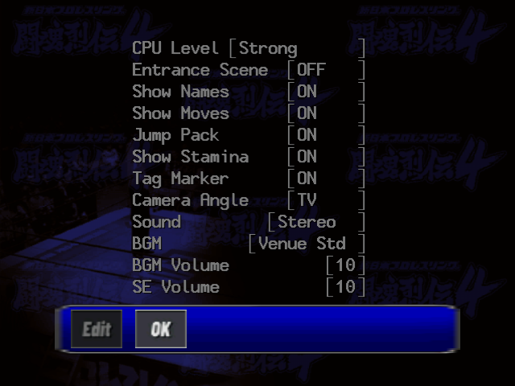
| Setting | Values (default in bold) | What it does |
|---|---|---|
| CPU Level | Aggressive, Strong, Sparring, Training | How hard the computer fights (The CPU). |
| Entrance Scene | OFF / ON | Watch the entrances before a match. |
| Show Names | ON / OFF | The wrestlers' names at the top of the screen. |
| Show Moves | ON / OFF | Each move's name at the bottom of the screen. |
| Jump Pack | ON / OFF | Rumble when a move hits you. |
| Show Stamina | ON / OFF | Your gauges on the VMU screen. |
| Tag Marker | ON / OFF | Arrows over the wrestlers in tag matches and battle royals. |
| Camera Angle | TV, Auto, Ring | TV: a moving TV-style camera (singles only). Auto: picks a suitable angle. Ring: fixed at ringside. |
| Sound | Stereo / Mono | |
| BGM | Venue Std, Tokyo A, Tokyo B, Tokyo C, Yokohama, Osaka A, Osaka B, Fukuoka, Sapporo, Random | The match music: the venue's own, or another venue's. |
| BGM Volume | 0 to 10 | Music volume. |
| SE Volume | 0 to 10 | Sound effects and crowd. |
Leave with OK; the options are saved on the memory card.
Saving and the VMU
The game saves to the memory card in the first slot of controller A, and asks for 92 free blocks the first time. Everything is saved straight away, with no save menu:
- A system file (2 blocks): the options and the unlocked wrestlers.
- One file per mode (17 in all): Exhibition tournaments, leagues and elimination matches, each IWGP title, each Series Match, Burning Spirit singles and tag. A mode writes its file as soon as you start it, and one save per mode is kept, so Start New replaces it.
- Edit wrestlers: one file per slot, 5 blocks each.
Edit Wrestler
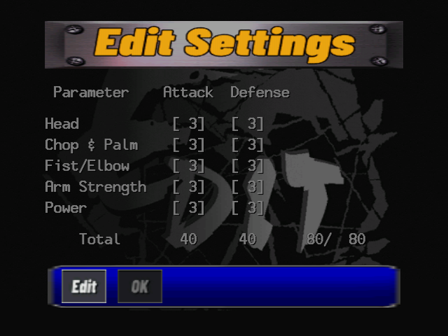
Up to eight wrestlers of your own, each in its own memory-card file. Edit Settings lists the eight slots ("Young Lion" while empty) with New, Edit and Copy. Copy writes the copy straight away, and New on a used slot starts over without asking, so mind the slot.
Screens with an Edit / OK bar start on the bar: A on Edit enters the list, A on a row opens or changes it, B goes back to the bar. In number fields, Up raises and Down lowers.
Profile
| Row | What it sets |
|---|---|
| Name | Up to 16 letters (Hiragana, Katakana, ABC/123 or Kanji pages). An empty name becomes "Young Lion". |
| Base | A preset wrestler whose move set and three critical combos are copied. Not his parameters, HP or looks. The default is Shinya Hashimoto. |
| Intro | The entrance speech, one of 112 (X plays it). |
| Alias | How the announcer calls you to the ring, one of 154 (X plays it). |
| Height / Weight | 170-210 cm and 85-190 kg, as announced in the ring call. |
| Theme | Any wrestler's entrance theme, or Edit Theme 1-7. |
OK goes on to the six setup screens below. OK there saves the wrestler and returns to the slot list; B out of the profile leaves without saving, and without asking.
Body Setup
Use a preset wrestler's model as it is (his 1P or 2P costume), or build one: a Build (Slim, Standard, Heavy), a Costume (Type A trunks, Type B tight-cuff, Type C flared), then a shape and a colour for each of 15 parts, from the head (24 shapes, 3 skin tones) and torso (44 shapes) to the trunks (29 shapes, 12 colours), knees, shins and feet.
Parameter Setup and HP Setup
- Parameter Setup: Attack and Defense, 0 to 5, for the 13 kinds of move (Damage). They start at 3 (Technique 4) and share a budget of 80 points: lower one to raise another.
- HP Setup: Main (stamina), Head, Torso, Arms and Legs, in steps of 1,000 up to 99,000 each, from a budget of 260,000. The starting values are 80,000 / 40,000 / 60,000 / 40,000 / 40,000.
Move Setup and Critical Setup
Move Setup has 35 categories, from Close Attack to the Victory Performance. Each lists its slots with the button, the "+ D-Pad" mark and the opponent's state (Normal, S, M, L Groggy), and A on a slot opens the moves allowed there. Each slot has a fixed list, so not every move fits everywhere, and some of the preset wrestlers' moves aren't offered at all.
Critical Setup sets the three critical combos, A, B and C, each a Start and a Finish picked from your own slots. Set the moves first.
Logic Setup
How the computer fights with your wrestler: four Thinking Patterns (named Early, Mid, Late and Finish Thinking at first). The game switches between them by how worn down the opponent is (The CPU). For each pattern:
- Detailed Settings: Personal Data (Return to Ring 5-20, Foul Count 1-5, Tag Frequency 1-5, Run-In Frequency 1-5), then a weight table for each situation: both in the ring with the opponent near and facing you, behind him or far away, groggy in a corner, running, getting up, down face up or face down, and the same outside and on the apron. Each table splits by the opponent's state (Normal, S, M, L Groggy) and shares 100 between Finger Lock, Taunt, Throw, Strike, Joint Locks, Whip, Move and the rest, in steps of 5. Each row's Detail gives the share of each of your moves.
- Learning: pick a partner (at the Options CPU Level) and a venue, and play a match with a "Learning..." banner and no time limit, to set the thinking automatically. Pause and press R to end it.
- Copy: copy another thinking pattern over this one.
Your wrestlers are in the Edit group on Character Select, all eight slots in order.
The CPU and Difficulty
The computer plays with a virtual controller through the same rules as you: the same priority, the same slots, the same mashing. The CPU Level option changes how often it thinks and how often it goes for its best choice:
| CPU Level | The game's description | In practice |
|---|---|---|
| Training | Rarely attacks; good for learning the game. | Thinks only every 8th frame and seldom takes its chances. It never mashes in a pin, so a medium-sized pin wins. |
| Sparring | Attacks a little. | Thinks every 4th frame; takes its chances a little more. |
| Strong | Attacks normally. | The default. Thinks every frame and mashes hard: expect kick-outs at 1. |
| Aggressive | Attacks aggressively. | As Strong, more decisive still, with its own set of thinking patterns. |
Each computer wrestler has four thinking patterns, and the one in use follows your body: while every part of yours is above 80 % it uses pattern 1; as two of your parts fall to 70 %, 60 % and 50 % (or any one to 15 %) it moves on to patterns 2, 3 and 4, and takes its chances more often. The computer changes how it fights as you get worn down. It doesn't learn from you during a match.
Strategy
- Don't pin early. A fresh wrestler kicks out of anything. Wear his stamina down first; at under 30 %, one big move followed at once by a pin wins.
- Pin straight after the big move. Stomps and elbow drops on a downed opponent take away his hurt, so he kicks out sooner.
- Work one body part for a submission. A hold only finishes once its part is used up, whatever his stamina. Low kicks for leg holds, arm work for arm holds.
- Watch the stagger. A tired wrestler goes groggy from little, and the groggy levels hold each wrestler's biggest moves: Shinya Hashimoto's Vertical Drop DDT and Heavy Bomb Kick sit at L.
- Mix up your buttons. Strike beats throw beats hold beats strike, every time. A player who always grabs is beaten by strikes.
- Don't let him rush. Eight hits in a row on a wrestler who is behind on stamina gives him a Toukon Rush. Let him land something now and then, or break the string yourself. Don't try to pin a rushing opponent, and don't take risks against his × 1.5 damage.
- Protect your own body. Your hurt parts weaken your moves, and stamina lost past 70 % and 30 % never fully comes back.
- Mash with everything. Tap several buttons and directions together, over and over. Holding one down counts once.
- Use the floor carefully. Moves outside do a little more, but the count-out comes at 20.
- Learn on Training. The Training computer never mashes in a pin, so it shows you what a winning pin looks like.
Common Mistakes
- Looking for a health bar: there is none on the TV. Use the VMU, or watch how easily he staggers and how long he stays down.
- Walking with the analog stick: it doesn't walk. Use the D-pad.
- Pressing Start on a menu: menus take A.
- Trying to change a rule or option without moving to Edit first.
- Tapping X to pin: that picks him up. Hold it.
- Looking for the costume button: it's Up/Down on the wrestler.
Wrestlers
All 42, in the order of Character Select: five groups, and inside each group in the order Right goes through them. Pick a row for the full profile: the Wrestler Directory's text, the wrestler's HP and ratings, his critical combos and his move list. The profile has its own link and a Compare view.
| Wrestler | Group | Size | Stamina | Best attack | Signature moves |
|---|
Stamina is the main HP in thousands. Best attack is the kind of move he rates highest in Attack. A lock marks a hidden wrestler.
Move List
Every move of every wrestler, read from the game's own move tables and named as the English translation shows them in the match. "N", "S", "M" and "L" are the opponent's state: normal, or groggy at level S, M or L. Where one input carries on into a second move, both names are given, joined by a slash ("Brainbuster / Brainbuster Slam"). Point at a move to see its kind and, where it differs, its name in the Edit lists.
By Wrestler
N: normalS groggyM groggyL groggy
Find a Move
Type a move's name to see who has it, and where.
| Move | Kind | Who, and where |
|---|
Secrets
Everything the game hides. The technical side, with how each was found, is in HIDDEN_CONTENT.md.
Hidden Wrestlers
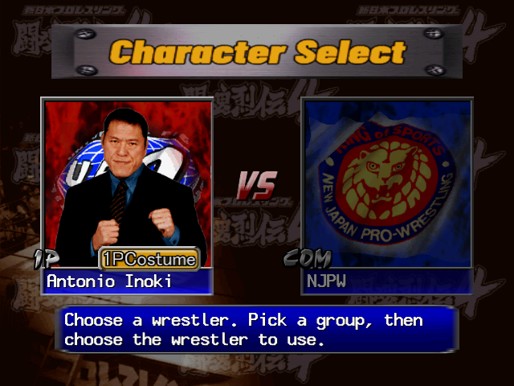
Seven wrestlers are locked at first. Each is unlocked by winning the last match of Burning Spirit with a certain wrestler or team; the number of opponents and the difficulty don't matter. With a memory card in, the unlock is saved at once.
| Unlocks | Clear Burning Spirit | with |
|---|---|---|
| Riki Choshu | Singles | Kensuke Sasaki |
| Antonio Inoki | Singles | Naoya Ogawa |
| SASUKE | Singles | The Great Sasuke |
| Masa Saito | Tag | a team with Riki Choshu |
| Seiji Sakaguchi | Tag | a team with Antonio Inoki |
| Tiger Hattori | Tag | a team with The Great Muta |
| Hidekazu Tanaka | Tag | a team with Power Warrior |
Saito and Sakaguchi need Choshu and Inoki first. Choshu, Saito, Sakaguchi, Tanaka (the ring announcer) and Hattori (the referee) join the end of the NJPW group, Inoki the UFO group and SASUKE the Junior Wrestlers.
Title-Screen Codes
On the "PRESS START BUTTON" title screen, on controller A, press L, six of X/Y/A/B, then R. These are all the codes there are.
| Code | Unlocks |
|---|---|
| L X Y B X Y B R | Riki Choshu |
| L X Y A X Y A R | Masa Saito |
| L X B X X B X R | Seiji Sakaguchi |
| L X Y X X Y X R | Hidekazu Tanaka |
| L X A X X A X R | Tiger Hattori |
| L X Y A B X Y R | Antonio Inoki |
| L X A Y B X A R | SASUKE |
| L X A A A A A R | All seven |
A code saves the unlock to the memory card at once. To earn them the normal way later, take the card out before entering a code.
Hidden Referees
In a singles match, hold both analog sticks (controllers A and B) while the match loads:
| Controller A | Controller B | Referee |
|---|---|---|
| Up | Up | Seiji Sakaguchi |
| Down | Up | Hidekazu Tanaka ("Kero") |
| Up | Down | Sachie Koike (Super J-Girls) |
| Right | Left | Hiroko Ito (Super J-Girls) |
| Left | Right | Nozomi Endo (Super J-Girls) |
CPU-Logic Control
In a computer-against-computer single match with an edit wrestler as the first wrestler, hold L on controller A while the match loads. During the match, A, B, X and Y on controller A then force his thinking pattern 1 to 4: a way to watch each of your thinking patterns at work.
The All Unlocked Patch
The translation also comes as an "(English) (All Unlocked)" patch, which starts with all seven hidden wrestlers unlocked and puts back two pieces of music the game never plays: the Sapporo venue's own music (the original plays Yokohama's there) and an eighth edit theme, Edit Theme 8.
On the Disc but Not in the Game
- Osamu Nishimura: his entrance theme is on the disc but unused, and his name is in the menu text. There is no model, voice or move set for him. His theme lives on as Edit Theme 7, at half the volume.
- Unused music: a separate 53-second Edit theme, the Sapporo arena track (both restored by the All Unlocked patch), and two more arena tracks never played.
- An older roster: an unused table of Edit text names call poses for wrestlers from an earlier game: Scott Norton, the Steiners, Yoshiaki Fujiwara, Wild Pegasus, Battle Liger, Super Delfin, Jinsei Shinzaki, Tiger Mask, Tiger King, and "B-Chono" and "Baby Muto".
- Test move sets: the move table has eight extra rows nothing reads, copies of the first wrestlers with the newest moves tried out in them, such as the Mochitsuki Liger Bomb and a Modified Exploder.
- Preset-only moves: a few moves only the presets have, such as Don Frye's punches and SASUKE's Mounted Palm, are in no Edit list.
- A debug camera for a third controller, left in the code but never called.
- A "World Pro-Wrestling" ring: a ring with the TV show's apron that nothing loads.
Japanese Glossary
Terms on the screens of the original Japanese game, with the English the translation shows.
| Japanese | Meaning | On screen in the translation |
|---|---|---|
| Main Menu | ||
| エキジビションマッチekijibishon matchi | Exhibition match | Exhibition Match |
| IWGP選手権試合IWGP senshuken shiai | IWGP championship match | IWGP Title Match |
| シリーズマッチshirīzu matchi | Series match | Series Match |
| チャレンジ・ザ・バーニングスピリッツcharenji za bāningu supirittsu | Challenge the Burning Spirit | Burning Spirit |
| エディットレスラーeditto resurā | Edit wrestler | Edit Wrestler |
| 通信対戦tsūshin taisen | Network battle | Network Match |
| 選手名鑑senshu meikan | Wrestler directory | Wrestler Directory |
| オプションopushon | Options | Options |
| Match types | ||
| シングルマッチshinguru matchi | Singles match | Singles Match |
| タッグマッチtaggu matchi | Tag match | Tag Match |
| バトルロイヤルbatoru roiyaru | Battle royal | Battle Royal |
| トーナメント戦tōnamento sen | Tournament | Tournament |
| リーグ戦rīgu sen | League | League Match |
| イリミネーションマッチiriminēshon matchi | Elimination match | Elimination |
| 勝ち抜き戦kachinuki sen | Winner-stays-on | Survival Match |
| 点取り戦tendori sen | Points contest | Points Match |
| 歴代覇者rekidai hasha | Champions through the years | Past Champions |
| チャンピオンロードchanpion rōdo | Champion road | Championship Road |
| Rules | ||
| ルール設定rūru settei | Rule settings | Rule Settings |
| 試合時間shiai jikan | Match time | Match Time |
| 引き分け設定hikiwake settei | Draw setting | Draw Setting |
| 強制退去kyōsei taikyo | Forced removal | Forced Exit |
| 異種格闘技ルールishu kakutōgi rūru | Mixed fighting-styles rules | MMA Rules |
| 場外戦jōgai sen | Fighting outside the ring | Outside Fights |
| 場外カウントjōgai kaunto | Outside count | Outside Count |
| Results | ||
| ピンフォールpinfōru | Pinfall | Pinfall |
| ギブアップgibu appu | Give up | Give Up |
| レフェリーストップreferī sutoppu | Referee stop | Referee Stop |
| リングアウトringu auto | Ring-out | Count-Out |
| 反則勝ちhansoku gachi | Win by foul | Win by DQ |
| 時間切れ引き分けjikangire hikiwake | Draw, time up | Time Limit Draw |
| 本部席裁定honbuseki saitei | Ruling from the officials' table | Table Ruling |
| In a match and in Edit | ||
| グロッキーgurokkī | Groggy | S / M / L Groggy |
| 闘魂ラッシュtōkon rasshu | Fighting-spirit rush | Toukon Rush |
| 思考パターンshikō patān | Thinking pattern | Thinking Pattern |
| 技設定waza settei | Move setup | Move Setup |
| 体力表示tairyoku hyōji | Stamina display | Show Stamina |
| セメントsemento | "Cement": a shoot, a real fight | Aggressive (CPU Level) |
| ヤングライオンyangu raion | Young Lion: an NJPW rookie | Young Lion |
| Groups | ||
| 新日本プロレスShin Nihon Puroresu | New Japan Pro-Wrestling | NJPW |
| フリーfurī | Freelance | Freelance |
| ジュニア選手junia senshu | Junior heavyweights | Junior Wrestlers |
Q&A
Is there an English version?
Not from Tomy: the game was released only in Japan. This guide goes with an English fan translation, released as a patch for your own copy of the game.
Where is the health bar?
There isn't one on the TV. With Show Stamina on, your gauges are on the VMU screen in the controller. Otherwise read the wrestler: a tired one staggers from a single strike and stays down longer (Stamina and Body Parts).
Why does he always kick out?
His stamina is still too high, or you hit him while he was down before pinning. Wear him down first, land a big move, and pin straight away (Pins and Kick-Outs).
My submission hold never wins.
The body part it works on has to be used up first. Work that part, then go for the hold (Submissions).
How do I get Inoki, Choshu and the others?
Clear Burning Spirit with the right wrestler, or enter a title-screen code (Hidden Wrestlers, Codes).
How do I pick the other costume?
Up/Down on Character Select, once the wrestler is showing.
Why did the game go back to the title screen?
That's what it does after a single Exhibition match, and after a loss in Burning Spirit. Start brings back the Main Menu.
I can't change the rules or options.
Those screens open on OK. Press Left to Edit first (Menus).
Can I still play online?
No. The Toukon Retsuden server closed long ago.
Does skipping a match count as a loss?
No. R on the pause screen ends the match with a simulated result, which you can win or lose.
Credits and Legal
This guide is a non-commercial fan project, not affiliated with or endorsed by New Japan Pro-Wrestling, Tomy or Yuke's. Shin Nihon Pro Wrestling: Toukon Retsuden 4 and its names, characters and trademarks belong to their owners.
The text is written in our own words from play, the game's code and data, and the sources below. The wrestler profiles and the move list are read from the game's own tables, with the English of the translation. It contains no scans or images from any printed guide. The screenshots are from the English fan translation.
Sources: Jeff "CJayC" Veasey's Toukon Retsuden 4 FAQ and Move List (GameFAQs, 2000) and elbarto's General FAQ (GameFAQs, 2001), whose claims were checked against the game; the Japanese Wikipedia article on the Toukon Retsuden series and gavas.jp for the release; dc-station.com and kakusi.jp for the hidden wrestlers and referees.
AI assisted with this guide.
The guide text is shared under Creative Commons Attribution-ShareAlike 4.0 (CC BY-SA 4.0; see LICENSE). You're free to share and adapt it, as long as you credit this guide and share alike.
Corrections are welcome: open an issue at the project's GitHub page.